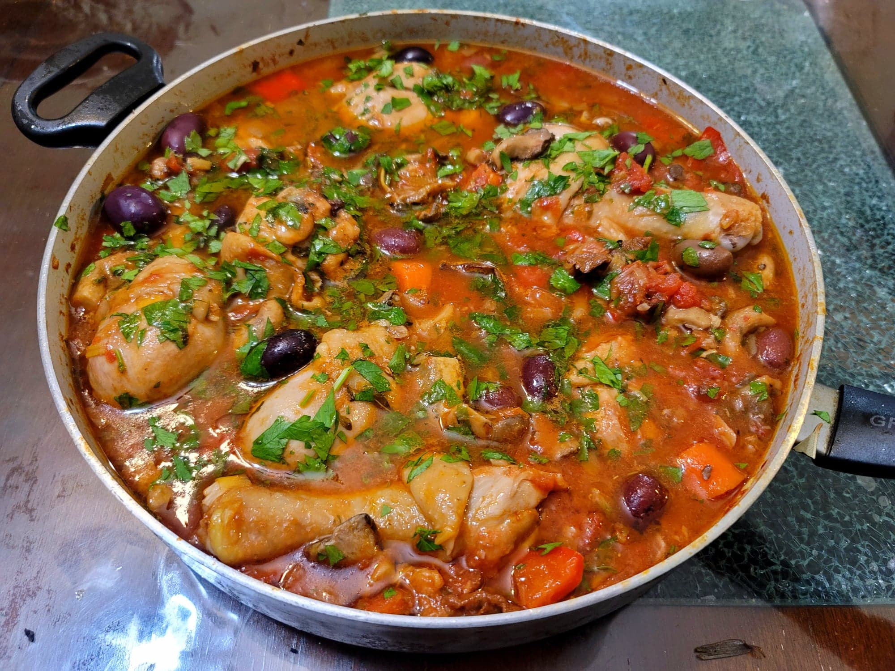

Chicken Cacciatore

Ingredients:
- 4 1/2 lb Chicken legs or thighs, bone-in, skin-on
- 3 tbsp Olive oil
- 8 cloves Garlic, smashed
- 1 Leek, halved and then sliced
- 1 lb Oyster mushrooms, chopped
- 1 Carrot, peeled and chopped
- 3-4 tsp Salt, or to taste
- 1 1/4 cup Red wine or White wine
- 1 28oz can Lightly crushed tomatoes
- 1 Red bell pepper, chopped
- 2 Bay leaves
- 2 tbsp Fresh oregano, 1 sprig Rosemary, and/or 5-10 sprigs Thyme
- Optional: 1 tsp Red pepper flakes
- 1/2 lb Wild mushrooms, or about 1 1/2 oz of Dried wild mushrooms reconstituted
- 1/2 - 1 cup Kalamata olives, whole
- 1/3 bunch Parlsey, chopped
Instructions:
- In a large pot or a very large pan, heat the olive oil over medium heat. Add in the garlic and sear on both sides until golden.
- Add in the leek with a little salt and sauté for about 10 minutes, or until softened. Then add in the oyster mushrooms and carrots and sauté for another 7-10 minutes, or until the mushrooms are softened.
- Add in the chicken and coat with the rest of the salt. Toss the contents of the pan together until mixed. Then pour in the red wine. Bring to a simmer and let reduce for 5 minutes.
- Toss in the tomatoes, bell pepper, bay leaves, fresh herbs, and red pepper flakes. Bring to a boil and then reduce to a simmer over low. Cover and let simmer for 50 minutes.
- Then remove the lid and toss in the wild mushrooms. Bring to a boil and then reduce to a simmer over low again. Cook for another 20 minutes, uncovered, or until the sauce has reduced to preference.
- Taste and add salt as needed. Garnish with olives and parsley and serve immediately.